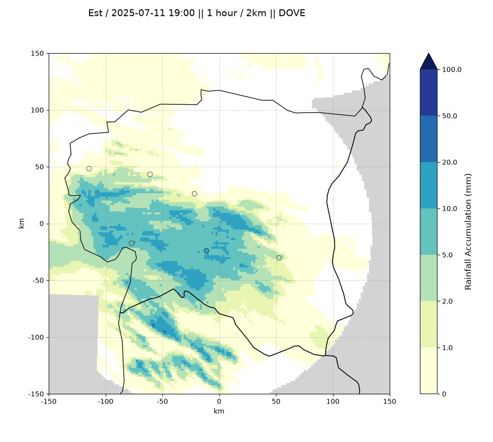
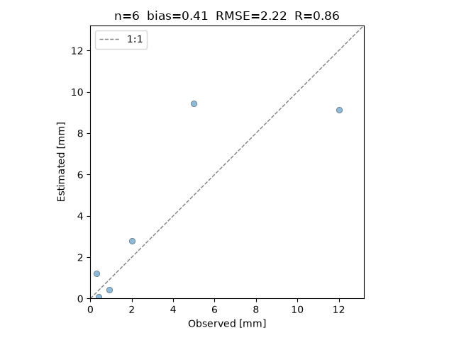

Naaulu (nah-ow-loo) is a powerful toolbox to estimate, combine, verify and visualize high-resolution precipitation datasets.
Process raw weather radar reflectivity measurements using a basic (Dove) or advanced (Eider) method.
Seamlessly combine high resolution datasets into coarser spatial and temporal resolution.
Validate estimation accuracy against local or global rain gauge networks using various error metrics.
Generate precise 2D spatial figures, sequential temporal video animations, and complete 3D renders of rainfall evolution with built-in mapping tools.
Run the install script:
curl -sSL https://naaulu.org/install.sh | bash
Compute rainfall estimations from radar data at base resolution (5min, 1km). Define the country code (e.g., est), and product method (i.e., dove or eider).
naaulu estimate \
--first 20250711T180500 \
--last 20250711T190000 \
--country est \
--product dove \
Combine the computed partial estimates over a specific duration and resolution:
naaulu combine \
--first 20250711T190000 \
--country est \
--duration pt1h \
--resolution 2km \
--product dove \
Render a high-quality spatial plot of the combined rainfall accumulation:
naaulu plot \
--first 20250711T190000 \
--country est \
--duration pt1h \
--resolution 2km \
--product dove \
--network est \
--show \

Validate the rainfall estimates against rain gauge observations and display the scatter plot with error metrics:
naaulu verify \
--first 20250711T190000 \
--country est \
--duration pt1h \
--resolution 2km \
--product dove \
--network est \
--show \
